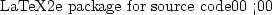

The set of processes and modules needed to access a data set is shown in
Figure  . In the figure two processes are shown. Process 1
contains the user program, a surrogate library implementation of the data
access API used by that program, and translator component which uses the DODS
DAP to request data used to satisfy calls from the user-program API calls.
This process, called the user process communicates with the second
process, the translating server process. The translating server
contains two modules--one to recast the incoming DODS DAP calls into calls
in the the data set's API and a second module that implements that API. In
the figure all data is transmitted over the network using the DODS DAP
regardless of the API used by the user program or used to store the data,
even if the APIs are the same.
. In the figure two processes are shown. Process 1
contains the user program, a surrogate library implementation of the data
access API used by that program, and translator component which uses the DODS
DAP to request data used to satisfy calls from the user-program API calls.
This process, called the user process communicates with the second
process, the translating server process. The translating server
contains two modules--one to recast the incoming DODS DAP calls into calls
in the the data set's API and a second module that implements that API. In
the figure all data is transmitted over the network using the DODS DAP
regardless of the API used by the user program or used to store the data,
even if the APIs are the same.
|  |
The DODS DAP's main function is to facilitate translation between two
different data access APIs. In order to read data stored in API X as in
Figure  a server which provides access using the DAP can
use the native implementation of API X to read information from the data set.
a server which provides access using the DAP can
use the native implementation of API X to read information from the data set.
In addition to the data accessible via the native API, each data set will contain ancillary data. These data will be directly accessed by some of the DAP calls. It will be used by both the local implementation of the DAP to aid in translating the DAP calls into the data set's native API calls and by the remote translation process.
In order to effectively translate the user program API calls into DODS DAP calls, the translator module must have some knowledge of the source data set's structure. This structural information will comprise part of the ancillary data that is accessed directly by the DODS DAP. Based on this information, which can be accessed using DAP calls, the translator can choose how to best translate the user programs data-access calls. In effect, the translator must map one data access API onto a data model to which it may not be well suited (either because the implementors of the user program or the data set have chosen an inappropriate interface).
Finally, in order to be useful by many user programs, particularly those
written by a third party development team for a group of users, the
translator must have some additional information about the representation of
certain data objects expected by the user program. This information, called
Usage Data in Figure  , will allow the user to
specify the format of dates and similar information which has many different
common forms but no universally accepted format. It is stored in a file
created by the user or developers of the user program. This
information is defined by DODS outside of the definition of API Y and will be
used by the translator module when data requests are made by the user program
or when data is returned to the user program in response to one of those
requests.
, will allow the user to
specify the format of dates and similar information which has many different
common forms but no universally accepted format. It is stored in a file
created by the user or developers of the user program. This
information is defined by DODS outside of the definition of API Y and will be
used by the translator module when data requests are made by the user program
or when data is returned to the user program in response to one of those
requests.